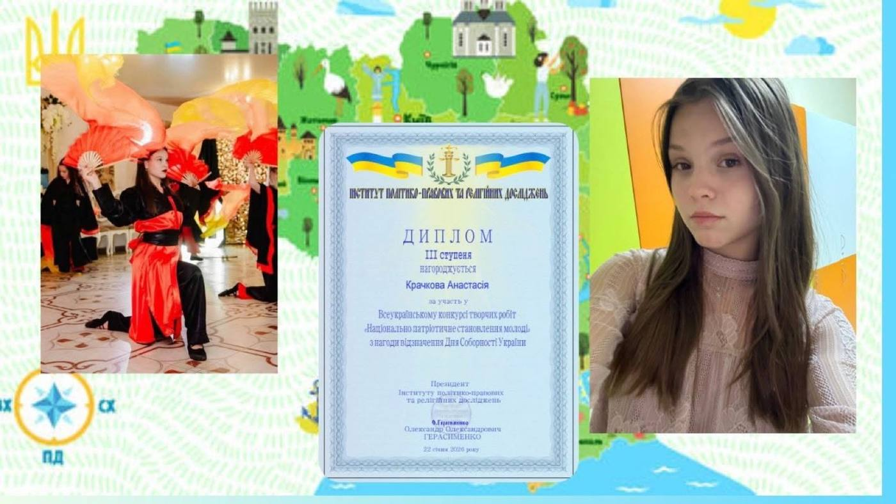

Анастасія Крачкова, 9-Б, — ІІІ місце у Всеукраїнському конкурсі творчих робіт


Вітаємо Анастасію з перемогою у Всеукраїнському конкурсі творчих робіт!
До Всеукраїнського конкурсу творчих робіт «Національно-патріотичне становлення молоді» долучилися понад 25 тисяч учасників. Проте навіть у такому щільному колі конкуренції голос Біляївсьго ліцею ✓2 прозвучав надзвичайно впевнено. Наша талановита учениця 9-Б Крачкова Анастасія здобула почесне ІІІ місце, продемонструвавши високий рівень обізнаності в історії та культурі нашої держави.
Варто підкреслити, що цей конкурс проводився за підтримки ключових державних інституцій — від Міністерства молоді та спорту до Національної академії педагогічних наук. Мета заходу — виявлення обдарованих особистостей, які через мистецтво та слово утверджують українську громадянську ідентичність і підтримують наших захисників та захисниць.
Бажаємо Насті нових звершень на навчальній ниві!
https://www.facebook.com/share/1CBdEJd4yL/?mibextid=wwXIfr
Джерело: спільнота ліцею у Facebook.